Event card
Every rule that paints this component, in one file. Colour through a role, geometry straight from a primitive.
What it is
One event, at a glance, repeated down a grid. A photograph, the category, the question, the probability with its bar, one line of why, and the meta row with volume, closing date and the save control.
The line that makes it this product's card rather than a generic one is .why. Every competitor puts a percentage on a tile; principle 1 exists because none of them says what is holding it there, and a card without that line is a card from a different product with our colours on it.
Anatomy
Which part is which, in the product's own words. Every class named here is one this file styles, and the build fails if it is not.
.card- the card, and also the product's plate. See the note at the end of When to use: the same class is the substrate of every painted screen, and that is declared rather than accidental..thumb- the event photograph. Content, so it goes on the element as a background image, which is one of the three things gate 9 lets through..top,.top-txt- the category row above the question..q- the question. The whole question, wrapped: this is user-written content and it is never rewritten and never clamped..prob,.prob-line- the probability figure and the line it sits on. The bar beside it isoddsbarand belongs to that file..why- the one-line reason the number is where it is. Story-led, per card, added in Step 18..card-body- the column the text stands in..meta,.meta-txt,.m-label,.m-val- the foot: volume and closing date. The label and the value are separate elements because the feed script splits them at run time, which is whycoverage.mdlists both as built at runtime..bookmark-btn- Save, into Favorites. One verb, one shelf, settled in the lexicon.
Live
The component in the markup it ships with, quoted from the frozen kit, inside the product's own wrapper and painted by components/index.css alone. Each frame is a page of its own, so the width under the title is a real viewport and the media queries answer to it.
The photo is keyed off the card position in the grid, so a card shown alone always gets the politics image.
The loading state is the card, not a component beside it: skeleton is a modifier and every rule that draws these bars is written as .card.skeleton .sk-line.
state The one place the card is the outer plate of a screen rather than a row in a grid. Copied from ui-visual/event-detail.html.
Also rendered inside
The same markup, shown once on the page of the component that owns it. Nothing here is a second copy.
States, as they look
Photographs, not renderings. Each was taken in the specimen linked beside it with a REAL pointer, a real Tab and the mouse button really held down (ui-kit/_verify/states.cjs); nothing here is a state faked with a stand class, which is the rule this section used to be missing because of. One row per distinct FACE: two elements that measure the same at rest are one picture, however many screens carry them, and that grouping is computed rather than chosen. The pictures go stale the moment a rule changes, so each one records the files it was taken from and python3 ui-kit/_states.py fails when their bytes move.
The card in a grid, at rest and under the pointer. The whole card answers, the photograph does not move, and the question does not shift: a grid where every card lifts a different amount is a grid that flickers as a thumb crosses it.
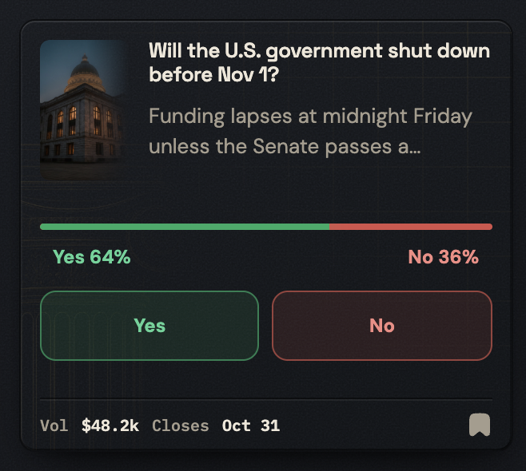
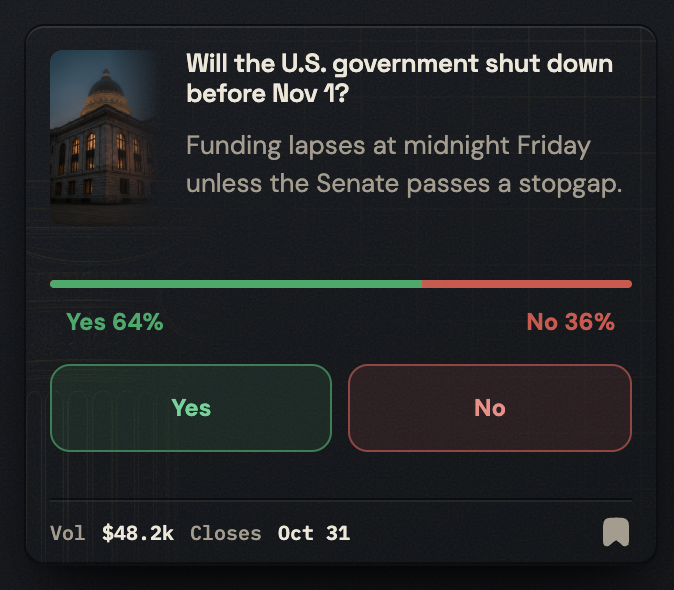
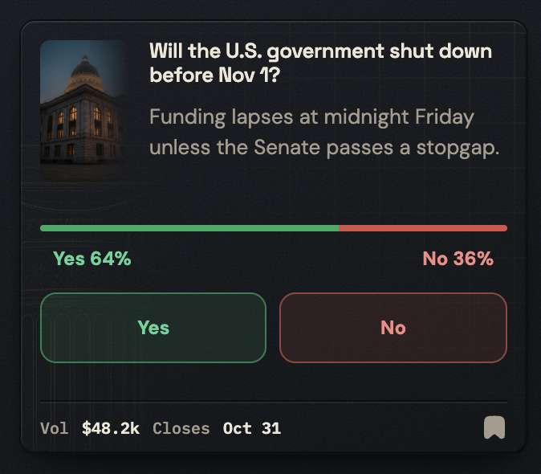

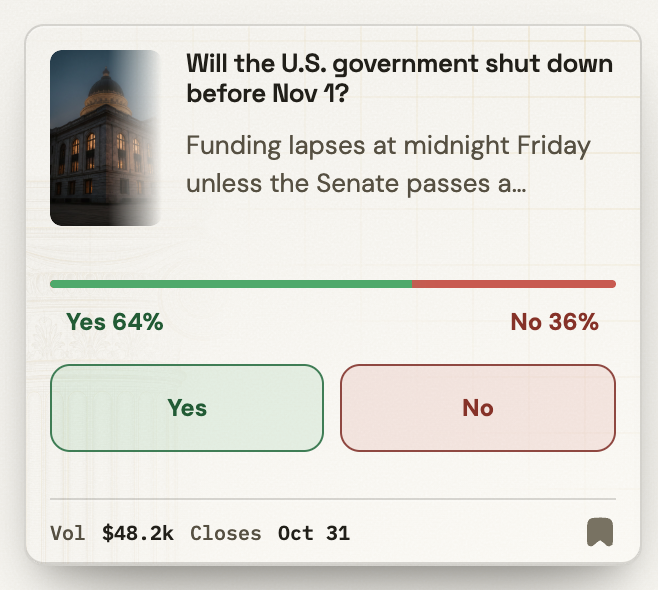
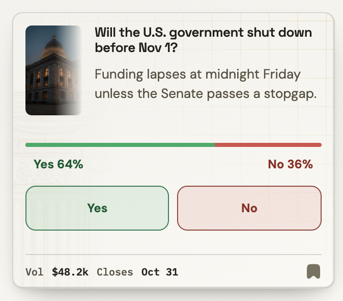
Not staged: focus. No specimen puts this one where the state can be raised, which is a specimen debt and not a missing rule.
The question, which is the card's real link. All four faces, and the focus ring is the one every screen shares from base.
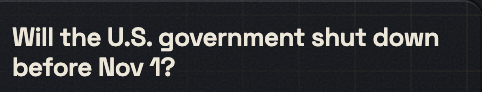
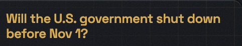
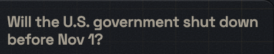
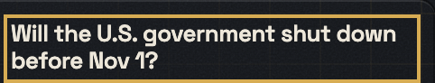
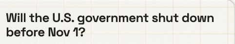
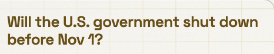
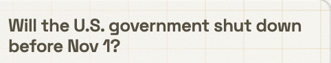
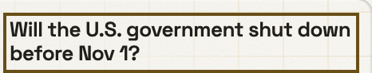
Save, at rest, hovered, held and focused. The mark fills rather than the ground: it is a state of the event, not a state of a control.
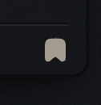
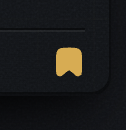
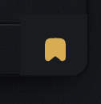
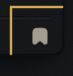
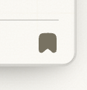
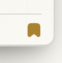
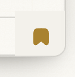
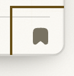
The loading card. It stands exactly where the real one will and holds the same height, so the grid does not jump when the data arrives.
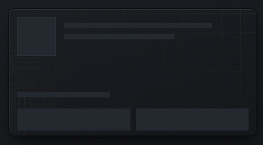
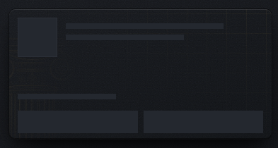

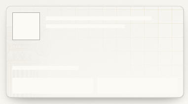
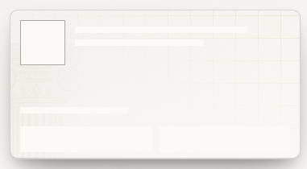

Not staged: focus. No specimen puts this one where the state can be raised, which is a specimen debt and not a missing rule.
The same class as the head plate of an Event Detail. Not an event card: the plate.

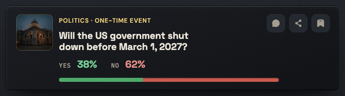

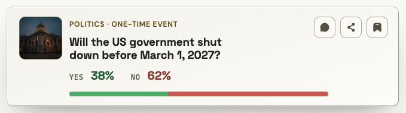

Not staged: focus. No specimen puts this one where the state can be raised, which is a specimen debt and not a missing rule.
And the same class again as a section plate inside the detail column. Three of these six faces are the component and three are the substrate, which is the clearest picture in the system of what inventory L75 is saying.


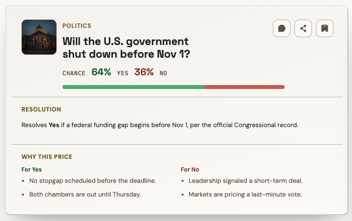
Not staged: focus. No specimen puts this one where the state can be raised, which is a specimen debt and not a missing rule.
When to use
The judgement a generator cannot read out of css, and the reason ui-kit/authored/card.md exists.
In a grid, on a browse screen, as the repeatable unit. Feed, category pages and Favorites, which is the same feed filtered.
Never with more than two option rows. A multi-outcome card shows the two leading options and says nothing about the rest, and R5 files that as a rule about PLACE: the two-row display is the card's own anatomy, not a smaller version of the detail's list.
Never as a place to bet from. The YES / NO on a card routes to the detail with the side pre-selected, and R7 counts it: 23 screens carry a grid and none of them an amount field or a Confirm.
And then there is the second job. .card is also the two-stone plate the whole painted product is built on, on every colour page, declared in inventory L75. So two of this component's six photographed faces are not event cards at all: one is the detail head, one is a section plate on the detail column. It works, it is written down, and it means the word "card" in this system answers two questions. A person reading coverage.md and seeing 36 screens is reading the EVENT card; the plate is everywhere.
The rule, and the anti-rule
One sentence to follow and one mistake worth naming. An anti-rule has to name the component that should have been used instead, or it is a complaint rather than an address, and the build checks that it does.
Every card carries its why: the figure and the one line that explains it ship together, because a bare percentage is exactly the competitor behaviour this product was specified against.
Never let the meta row's controls come from button: Save is .bookmark-btn and it is a mark that toggles, not a chip that presses, and giving it the quiet control ground would put a filled rectangle in a row whose whole design is that it is the lightest thing on the card.
Predicted: it has not happened here. What HAS happened is the same mistake one level up and in the other direction - ui-kit/docs/backlog.md S16, where one quiet button had accumulated five names, and S11, where the action bar's button was painted by components/account.css for three stages because the markup was a bare element with no class of its own. .bookmark-btn has a class, which is the only reason this one is a prediction rather than a finding.
Constraints
What this component may do beside the others: how many of it a screen may carry, and where it may not stand. The 3 rules that name this component, quoted from Rules of use, which is where each one was decided and where its numbers and its source are. This is an extract and not a second copy: gate 26 fails the build if a rule names a component whose page is silent, and equally if a page carries a rule the document does not have.
| rule | what it says | class | check it at a glance |
|---|---|---|---|
| R5 | The full outcome list does not stand inside a card | CONTEXT | count the option rows in a card. Three is already wrong |
| R7 | A bet control does not stand on a list of events | CONTEXT | on any screen with a grid of cards there is no amount field and no Confirm |
| R8 | A system screen carries the frame and not the navigation | CONTEXT | a system screen offers a way out through the chrome and a way out through its state block, and nothing to browse |
Roles it reads
Colour comes in only through these. Change one on the token page and it changes here and on every screen at once.
--bevel-faint--bevel-hair--bevel-lo--bevel-xs--bg-card--bg-card-from--bg-card-to--bg-control--bg-pressed--bg-surface--border-brass--border-hairline--color-action--edge-groove-light--edge-shade--edge-shade-strong--icon-brass--icon-quiet--mask-mid--mask-solid--outcome-no-figure--outcome-yes-text--shadow-ink--shadow-ink-45--shadow-ink-60--shadow-ink-72--shadow-ink-85--surface-grain--surface-grid--text-brass--text-muted--text-primaryClasses
Every class this file styles, and how many of the 105 painted screens carry it. A zero is not automatically dead: the last column says whether the class is built at runtime, shown only in the kit, a leftover of the grey wireframes, used by a course page, or genuinely used by nothing. Gate 30 fails the build on the last kind.
| class | screens | if zero |
|---|---|---|
| .app-case | 105 | |
| .bookmark-btn | 12 | |
| .card | 36 | |
| .card-body | 23 | |
| .ed-main | 11 | |
| .ed-prob-big | 9 | |
| .gallery | 2 | |
| .ic | 105 | |
| .m-label | 0 | runtime |
| .m-val | 0 | runtime |
| .meta | 12 | |
| .meta-txt | 12 | |
| .prob | 21 | |
| .prob-line | 12 | |
| .q | 12 | |
| .thumb | 12 | |
| .top | 23 | |
| .top-txt | 9 | |
| .why | 11 |
Where it stands
Written from
The authored half of this page is the one artefact here no gate can read: a sentence cannot be checked for being true. So it names its sources before it says anything, and the build fails when one of them does not exist. Read this first if you doubt a claim above it.
ui-kit/docs/inventory.mdL76 and L77 - the binary card (treatment B, 36 screens, states rest / hover) and the multi card (treatment D, 20 screens, "2 leading options").ui-kit/docs/inventory.mdL75 - and this is the row that changes how the file reads: "Two-stone plate / surface system (.cat-layout,.feed-innerinset plates, notched brass frames, groove edges, trust-column watermarkcard::after)", filed undercomponents/card.css, location "every color page (the substrate)". The class is the event card AND the product's general plate.ui-kit/docs/inventory.mdL80 and L81 - the probability figure, and the meta row with its bookmark.voice/docs/microcopy.mdStep 18 - "Feed story-led reconcile: per-card why + below-fold SEO sections", which is where.whycame from and why it is not optional decoration.voice/docs/microcopy.mdStep 24 -Closes: Sep 1, 2027, opened as a defect and closed as correct: the colon is a DELIMITER the feed script splits the meta row on into.m-labeland.m-val, so removing it stops the row splitting.- R5, R7 and R8 in
ui-kit/docs/architecture.md- two option rows and never the full list, no bet control on a screen that carries cards, and 0 cards on the five system screens. ia/docs/sitemap.mdL315 - the two-option preview rule, and its reason: the meta rows line up across the grid and the feed reads evenly.voice/docs/voice.md, principle 1 - "Explain the number, never just show it", derived fromresearch.md:95andux-patterns.md:67: no competitor explains why the price is what it is..whyis that principle at card size.- The 36 painted screens.
What the file says
The selectors and the css, for a person about to edit them. To change this component, edit components/card.css; to change a value it reads, edit the role in components/tokens.css.
Every state rule, and what it moves
| selector | what moves |
|---|---|
| .card a.q:hover | color:var(--text-brass);text-decoration:none |
| .card a.q:active | color:var(--text-muted) |
| .card .bookmark-btn:hover .ic | stroke:var(--icon-brass) |
| .card .bookmark-btn:hover .ic:has(use) | color:var(--icon-brass) |
| .card .bookmark-btn:active | background:var(--bg-pressed) |
| .card .bookmark-btn:active .ic | stroke:var(--icon-brass) |
| .card .bookmark-btn:active .ic:has(use) | color:var(--icon-brass) |
| .card:hover | transform:translateY(-3px);box-shadow:inset 0 1px 0 var(--bevel-lo),inset 0 -1px 0 var(--edge-shade-strong),0 26px 44px -20px var(--shadow-ink-85),0 10px 18px -8px var(--shadow-ink-72) |
| .card:active | transform:translateY(0);box-shadow:inset 0 1px 0 var(--bevel-xs),inset 1px 0 0 var(--bevel-hair),inset -1px 0 0 var(--edge-shade),inset 0 -1px 0 var(--edge-shade-strong),0 16px 30px -18px var(--shadow-ink-85),0 5px 12px -6px var(--shadow-ink-60) |
| .card:hover | transform:none |
| .app-case .ed-main>.card:hover | transform:none;box-shadow:none |
The tokens these states read, on both grounds
Neither panel is a screenshot. Each carries data-theme itself, so the token resolves inside it and a role that was given a value in only one theme shows up here as a control that does not move.
--text-brassConfirm betthe label, on the ground this state puts it on--text-mutedConfirm betthe label, on the ground this state puts it on--icon-brassConfirm betthe ground the control settles onto--bg-pressedConfirm betthe ground the control settles onto--bevel-loConfirm betthe ground the control settles onto--edge-shade-strongConfirm betthe ground the control settles onto--shadow-ink-85Confirm betthe ground the control settles onto--shadow-ink-72Confirm betthe ground the control settles onto--bevel-xsConfirm betthe ground the control settles onto--bevel-hairConfirm betthe ground the control settles onto--edge-shadeConfirm betthe ground the control settles onto--shadow-ink-60Confirm betthe ground the control settles onto--text-brassConfirm betthe label, on the ground this state puts it on--text-mutedConfirm betthe label, on the ground this state puts it on--icon-brassConfirm betthe ground the control settles onto--bg-pressedConfirm betthe ground the control settles onto--bevel-loConfirm betthe ground the control settles onto--edge-shade-strongConfirm betthe ground the control settles onto--shadow-ink-85Confirm betthe ground the control settles onto--shadow-ink-72Confirm betthe ground the control settles onto--bevel-xsConfirm betthe ground the control settles onto--bevel-hairConfirm betthe ground the control settles onto--edge-shadeConfirm betthe ground the control settles onto--shadow-ink-60Confirm betthe ground the control settles ontocomponents/card.css
/* components/card.css
Component: card. Classes: .bookmark-btn, .card, .card-body, .m-label, .m-val, .meta, .meta-txt, .prob, .prob-line, .q, .thumb, .top, .top-txt, .why.
Reads: --bevel-faint, --bevel-hair, --bevel-lo, --bevel-xs, --bg-card, --bg-card-from, --bg-card-to, --bg-control, --bg-pressed, --bg-surface, --border-brass, --border-hairline, --color-action, --edge-groove-light, --edge-shade, --edge-shade-strong, --icon-brass, --icon-quiet, --mask-mid, --mask-solid, --outcome-no-figure, --outcome-yes-text, --shadow-ink, --shadow-ink-45, --shadow-ink-60, --shadow-ink-72, --shadow-ink-85, --surface-grain, --surface-grid, --text-brass, --text-muted, --text-primary
Stand: ui-kit/card.html
Stands on: 36 ui-visual screens (event-detail-bet-error.html, event-detail-bet-insufficient.html, event-detail-bet-processing.html, event-detail-bet-reconcile.html, event-detail-loading.html, ...)
Colour goes through a role, geometry straight from a primitive. No em dash. */
.card .top{display:flex}
.thumb{display:flex;align-items:center;justify-content:center;text-align:center;padding:var(--space-2)}
.card .q{font-size:var(--text-13);font-weight:var(--weight-bold);margin:0}
.card a.q{text-decoration:none}
.card .prob-line{margin:var(--space-8) 0 var(--space-8)}
.card .prob{font-weight:var(--weight-bold)}
.card .meta{display:flex;justify-content:space-between;gap:var(--space-8);font-size:var(--text-10)}
.card .meta .meta-txt{display:flex;flex-wrap:wrap;gap:var(--space-8)}
.card .bookmark-btn{flex:0 0 auto;cursor:pointer;display:inline-flex;align-items:center;line-height:0}
.why{margin:var(--space-4) 0 0;line-height:var(--leading-base)}
.card{position:relative;display:flex;flex-direction:column;background:var(--bg-surface);overflow:clip}
.card::before{top:-4px;right:-8px;background:url("data:image/svg+xml,%3Csvg xmlns='http://www.w3.org/2000/svg' width='200' height='122' viewBox='0 0 200 122'%3E%3Cg fill='none' stroke='%23ff8ac4' stroke-width='1.4'%3E%3Cpath d='M-10 14 C 20 4 40 24 70 14 S 120 4 150 14 S 200 24 230 14'/%3E%3Cpath d='M-10 30 C 20 20 40 40 70 30 S 120 20 150 30 S 200 40 230 30'/%3E%3Cpath d='M-10 46 C 20 36 40 56 70 46 S 120 36 150 46 S 200 56 230 46'/%3E%3Cpath d='M-10 62 C 20 52 40 72 70 62 S 120 52 150 62 S 200 72 230 62'/%3E%3Cpath d='M-10 78 C 20 68 40 88 70 78 S 120 68 150 78 S 200 88 230 78'/%3E%3Cpath d='M-10 94 C 20 84 40 104 70 94 S 120 84 150 94 S 200 104 230 94'/%3E%3C/g%3E%3C/svg%3E") no-repeat right top / 220px 132px}
.card > *{position:relative;z-index:var(--z-content)}
.card .card-body{display:flex;flex-direction:column;flex:1 1 auto;padding:var(--space-12) var(--space-12) var(--space-8)}
.thumb{width:var(--size-56);height:var(--size-56);flex:0 0 var(--size-56);border:1px solid var(--border-hairline);background-size:cover;background-position:center;color:transparent;font-size:0}
/* The sixteen rules that used to sit here said which of the twelve feed cards shows which
photograph, keyed on :nth-of-type. That is not styling, it is the content of a screen, and the
system's own rule already names the event photograph as one of the three things that belong on
the element. So it is there now, and this file describes the frame the photograph sits in. */
.card .q,.card a.q{font-family:var(--font-display);font-weight:var(--weight-semibold);font-size:var(--text-13);line-height:var(--leading-tight);letter-spacing:-.02em;color:var(--text-primary)}
.card a.q:hover{color:var(--text-brass);text-decoration:none}
/* A BARE LINK HAS NO GROUND, so it cannot take the system's --bg-pressed. This question wraps to
two lines inside the card's text column, and an opaque stone behind it reads as a text
selection rather than as a control being held. The ink steps down instead, which is the answer
.hf-title and .hh-name already give in hero.css, and it is the only one that works on a touch
screen, where there is no hover to have left. --text-muted is not a new value on this surface:
.why, .prob-line and .meta all carry it on the same card body. Equal specificity to the hover
above (0,3,1), so this has to sit after it. */
.card a.q:active{color:var(--text-muted)}
.why{color:var(--text-muted);font-size:var(--text-13);min-height:35px;margin-bottom:var(--space-12)}
.card .prob-line{color:var(--text-muted);font-size:var(--text-11);letter-spacing:.03em;text-transform:uppercase}
.card .prob{font-family:var(--font-display);background:transparent;border:0;color:var(--text-primary);font-size:var(--text-16);padding:0 var(--space-2)}
.card .meta{color:var(--text-muted);align-items:center;margin-bottom:0;padding-top:var(--space-8);font-family:var(--font-mono)}
.card .meta .m-label{color:var(--text-muted)}
.card .meta .m-val{color:var(--text-primary);font-weight:var(--weight-semibold)}
.card .bookmark-btn{background:transparent;border:0;padding:0;display:inline-flex;align-items:center;justify-content:center;min-width:var(--control-44);min-height:var(--control-44);margin:calc((var(--control-44) - var(--icon-16)) / -2)}
.card .bookmark-btn .ic{width:var(--icon-16);height:var(--icon-16);stroke:var(--icon-quiet)}
.card .bookmark-btn:hover .ic{stroke:var(--icon-brass)}
.card .bookmark-btn[aria-pressed="true"] .ic{fill:var(--icon-brass);stroke:var(--icon-brass)}
.card .bookmark-btn .ic:has(use){color:var(--icon-quiet)}
.card .bookmark-btn:hover .ic:has(use){color:var(--icon-brass)}
.card .bookmark-btn[aria-pressed="true"] .ic:has(use){color:var(--icon-brass)}
/* Save is this card's own control and it said nothing on the way down. It is flat at rest, a
transparent 44px box with no border, so it presses the one way every icon button in the system
presses: it settles onto --bg-pressed, square cornered, because a radius is geometry and a
state may not move the element it is on. That is .logo-btn's answer in header.css, written for
the same reason. The two mark rules mirror the two hovers above rather than leaning on them: a
card is the tap target of the feed, a finger never hovers, and without them a thumb would get a
grey square where a pointer gets brass. */
.card .bookmark-btn:active{background:var(--bg-pressed)}
.card .bookmark-btn:active .ic{stroke:var(--icon-brass)}
.card .bookmark-btn:active .ic:has(use){color:var(--icon-brass)}
/* The 44px box is unconditional above, so this block is not a touch-target rule any more: what is
left is a narrow-screen layout fact, the enlarged button pulled tighter into the meta row. It
stays on a width query for that reason, and its raw -8px went onto the grid. */
@media(max-width:640px){
.card .bookmark-btn{margin:calc(var(--space-8) * -1) calc(var(--space-8) * -1) calc(var(--space-8) * -1) 0}
}
.card::before{content:'';position:absolute;inset:0;width:auto;height:auto;z-index:var(--z-under);pointer-events:none;opacity:1;background-color:transparent;background-repeat:repeat;background-size:auto;background-image:var(--surface-grid)}
.thumb{border-color:var(--border-brass)}
.card{background-color:var(--bg-card);background-image:var(--surface-grain),linear-gradient(160deg,var(--bg-card-from),var(--bg-card-to));background-blend-mode:overlay,normal;border:1px solid var(--shadow-ink-45);border-radius:var(--radius-10);box-shadow:inset 0 1px 0 var(--bevel-xs),inset 1px 0 0 var(--bevel-hair),inset -1px 0 0 var(--edge-shade),inset 0 -1px 0 var(--edge-shade-strong),0 16px 30px -18px var(--shadow-ink-85),0 5px 12px -6px var(--shadow-ink-60);transition:transform var(--dur-slower) var(--ease-out),box-shadow var(--dur-slower) var(--ease-out)}
.card:hover{transform:translateY(-3px);box-shadow:inset 0 1px 0 var(--bevel-lo),inset 0 -1px 0 var(--edge-shade-strong),0 26px 44px -20px var(--shadow-ink-85),0 10px 18px -8px var(--shadow-ink-72)}
/* The lift STAYS on hover: it is the Vault's floating language, it is composited and it shifts no
neighbour. A HELD card settles instead of hanging in mid air, so the press puts it back where it
already rests and restates the rest stack, which is the same answer .hero-trust and .social-row
give. Nothing here is a new value: both lines are the rest rule above, repeated so they win
while the pointer is down. Equal specificity to the hover (0,2,0), so this has to sit after it,
because with a mouse both states are true at once and only source order separates them. The
stripped event-detail card is untouched by either property: its own rest and hover rules stand
at 0,3,1 and out-specify this one. */
.card:active{transform:translateY(0);box-shadow:inset 0 1px 0 var(--bevel-xs),inset 1px 0 0 var(--bevel-hair),inset -1px 0 0 var(--edge-shade),inset 0 -1px 0 var(--edge-shade-strong),0 16px 30px -18px var(--shadow-ink-85),0 5px 12px -6px var(--shadow-ink-60)}
.card::after{content:'';display:block;position:absolute;left:-52px;bottom:0;width:168px;height:78%;z-index:var(--z-under);pointer-events:none;opacity:.20;background:url("../assets/trust-column-full.webp") no-repeat center bottom;background-size:contain;-webkit-mask-image:linear-gradient(to right,var(--mask-solid) 44%,transparent 94%);mask-image:linear-gradient(to right,var(--mask-solid) 44%,transparent 94%)}
.card .card-body{position:relative;z-index:var(--z-content)}
.card::before{background-position:0 -10px;-webkit-mask-image:linear-gradient(to bottom left,var(--mask-solid) 0%,var(--mask-mid) 24%,transparent 56%);mask-image:linear-gradient(to bottom left,var(--mask-solid) 0%,var(--mask-mid) 24%,transparent 56%)}
.card .meta{border-top:1px solid var(--shadow-ink-45);box-shadow:inset 0 1px 0 var(--bevel-faint);margin-top:auto}
.card .top{align-items:stretch;gap:var(--space-12);margin-bottom:var(--space-12);min-height:88px}
.card .top-txt{display:flex;flex-direction:column;gap:var(--space-8);min-width:0}
.card .top-txt .why{display:-webkit-box;-webkit-box-orient:vertical;-webkit-line-clamp:2;line-clamp:2;overflow:hidden}
.card .thumb{width:var(--size-56);flex:0 0 var(--size-56);height:auto;align-self:stretch;min-height:84px;border:0;border-radius:var(--radius-6) var(--radius-6) var(--radius-6) var(--radius-6);background-size:cover;background-position:center;-webkit-mask-image:linear-gradient(to right,var(--mask-solid) 52%,transparent);mask-image:linear-gradient(to right,var(--mask-solid) 52%,transparent)}
.card .top-txt .why{margin:0}
.thumb{border-radius:var(--radius-6)}
@media(prefers-reduced-motion:reduce){
.card{transition:box-shadow var(--dur-base)}
.card:hover{transform:none}
}
.app-case .ed-main>.card{background:none;border:0;box-shadow:none;border-radius:0;overflow:visible;transition:none}
.app-case .ed-main>.card:hover{transform:none;box-shadow:none}
.app-case .ed-main>.card::before,.app-case .ed-main>.card::after{display:none}
.app-case .ed-prob-big .prob{font-family:var(--font-display);font-weight:var(--weight-bold);font-size:var(--text-20);letter-spacing:normal;text-transform:none;border:0;background:transparent;padding:0 var(--space-4)}
.app-case .ed-prob-big .prob:first-of-type{color:var(--outcome-yes-text)}
.app-case .ed-prob-big .prob:last-of-type{color:var(--outcome-no-figure)}
.app-case .gallery .card{width:172px;height:98px;flex:0 0 auto;border:1px solid var(--border-hairline);border-radius:var(--radius-10);background:linear-gradient(150deg,color-mix(in oklab,var(--color-action) 11%,var(--bg-control)),var(--bg-control) 70%);color:var(--text-primary);font-size:var(--text-11);line-height:var(--leading-snug);font-weight:var(--weight-semibold);padding:var(--space-12);display:flex;flex-direction:column;justify-content:flex-end;align-items:flex-start;position:relative;overflow:hidden;box-shadow:inset 0 1px 0 var(--edge-groove-light),0 14px 30px -24px var(--shadow-ink)}
.app-case .gallery .card::before{display:none}
.app-case .gallery .card::after{content:"\2197";background:none;position:absolute;top:8px;right:11px;left:auto;bottom:auto;width:auto;height:auto;color:var(--text-brass);font-size:var(--text-14);opacity:.85}